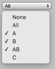

EditorGUI.EnumFlagsField
Parameters
| position | Rectangle on the screen to use for the enum flags field. | |
| label | Optional label to display in front of the enum flags field. | |
| enumValue | Enum flags value (Only supports enum values for enum types with int as the underlying type). | |
| style | Optional GUIStyle. | |
| includeObsolete | Set to true to include Enum values with ObsoleteAttribute. Set to false to exclude Enum values with ObsoleteAttribute. |
Returns
Enum The enum flags value modified by the user. This is a selection BitMask where each bit represents an Enum value index. (Note this returned value is not itself an Enum).
Description 描述
Displays a menu with an option for every value of the enum type when clicked. An option for the value 0 with name "Nothing" and an option for the value ~0 (that is, all bits set) with the name "Everything" are always displayed at the top of the menu. The names for the values 0 and ~0 can be overriden by defining these values in the enum type.
Note: This method only supports enums whose underlying types are supported by Unity's serialization system (sbyte, short, int, byte, ushort, or uint). For enums backed by an unsigned type, the "Everything" option should have the value corresponding to all bits set (i.e. ~0 in an unchecked context or the MaxValue constant for the type).

Simple editor window that shows the enum flags field.
using UnityEditor; using UnityEngine;
class EnumFlagsFieldExample : EditorWindow { enum ExampleFlagsEnum { None = 0, // Custom name for "Nothing" option A = 1 << 0, B = 1 << 1, AB = A | B, // Combination of two flags C = 1 << 2, All = ~0, // Custom name for "Everything" option }
ExampleFlagsEnum m_Flags;
[MenuItem("Examples/EnumFlagsField Example")] static void OpenWindow() { GetWindow<EnumFlagsFieldExample>().Show(); }
void OnGUI() { m_Flags = (ExampleFlagsEnum)EditorGUI.EnumFlagsField(new Rect(5, 5, 300, 20), m_Flags); } }